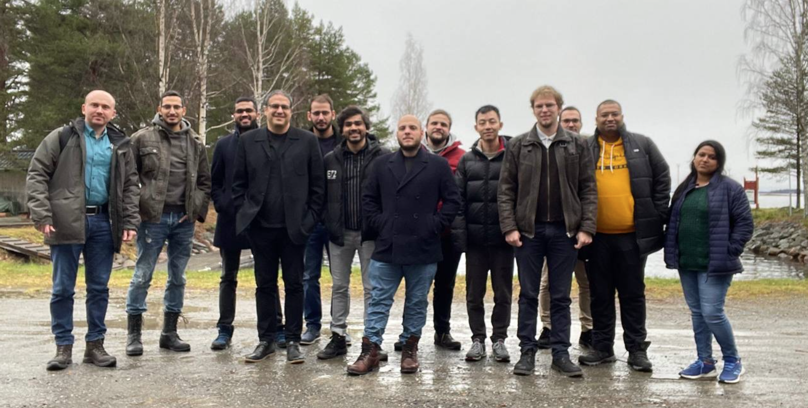
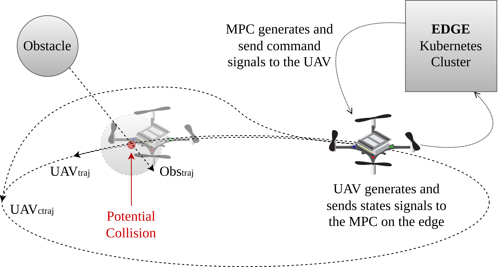
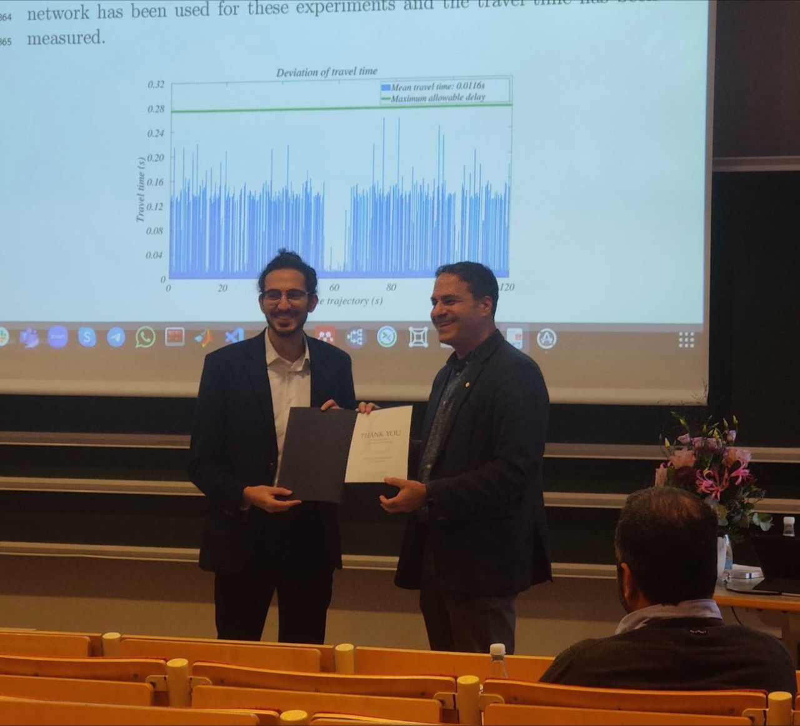
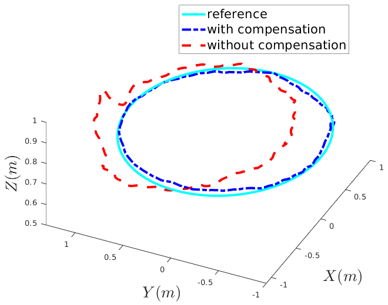
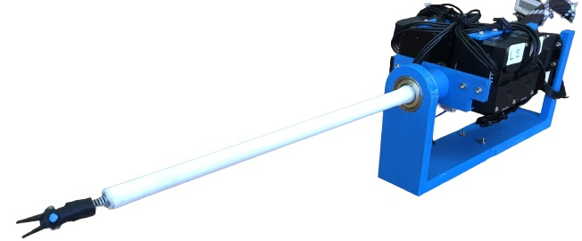

Participated in the annual Department Day at Luleå University of Technology.
Read moreDuring March 13–15, 2024, the Computer Science, Electrical and Space Engineering Department at Luleå University of Technology held its annual Department Day. The event brought together researchers, faculty, and students to present ongoing work, celebrate achievements, and foster collaboration across research groups.

Published a paper in the Journal of Parallel and Distributed Computing (JPDC).
Read moreOn January 29th 2024, our paper was published in the Journal of Parallel and Distributed Computing (JPDC). The work presents advances in scalable cloud-robot architectures for edge-enabled multi-agent systems, contributing theoretical and experimental results on resource allocation and system resilience for networked robotic platforms.

Attended the 3rd AERO-TRAIN Innovation Week in Seville, Spain.
Read moreDuring November 19–25, 2023, I attended the 3rd AERO-TRAIN Innovation Week in Seville, Spain. The Innovation Weeks are intensive training events bringing together all early-stage researchers (ESRs) of the network for workshops, lectures from industry experts, and collaborative research activities. The Seville edition focused on aerial robotics applications in industrial inspection and maintenance.
Participated in a Marie Curie Fellows networking event.
Read moreOn November 17th 2023, I participated in a Marie Curie Fellows networking and dissemination event. As an MSCA Early-Stage Researcher within the AERO-TRAIN ITN–ETN project, I shared my research journey and connected with fellow Marie Curie researchers across different fields and institutions, highlighting the impact of EU-funded research training networks.
Successfully defended my Licentiate of Engineering thesis at Luleå University of Technology.
Read moreOn November 9th 2023, I defended my Licentiate of Engineering thesis entitled "Towards Enabling the Next Generation of Edge Controlled Robotic Systems" at Luleå University of Technology, Sweden. The licentiate represents the midpoint of the Swedish Ph.D. program and encompasses the first half of my doctoral research on edge computing for autonomous robotic systems.

Conducted a lab-to-lab secondment visit as part of the AERO-TRAIN project in Italy.
Read moreDuring October 11–12, 2023, I undertook a lab-to-lab (L2L) visit as part of the AERO-TRAIN Marie Curie project. The visit facilitated knowledge exchange and hands-on collaboration with partner researchers on aerial robotic systems, contributing to the cross-institutional research network fostered by the MSCA ITN–ETN programme.
Attended the 2nd AERO-TRAIN Innovation Week in Barcelona, Spain.
Read moreDuring July 2–9, 2023, I attended the 2nd AERO-TRAIN Innovation Week in Barcelona, Spain. The event included workshops on aerial robotics, industry sessions, and collaborative research activities, with a strong focus on bridging academic research and industrial applications for aerial autonomous systems.
Attended and presented at the International Conference on Unmanned Aircraft Systems 2023 in Warsaw, Poland.
Read moreIn June 2023, I attended ICUAS 2023 in Warsaw, Poland, the International Conference on Unmanned Aircraft Systems. The conference is one of the premier venues for UAS research, bringing together researchers and practitioners from academia and industry working on autonomous aerial systems, navigation, control, and applications.

Presented research at the International Conference on Control, Automation and Diagnosis in Rome, Italy.
Read moreDuring May 9–12, 2023, I travelled to Rome, Italy, to present at the International Conference on Control, Automation and Diagnosis (ICCAD 2023). I presented our work on edge-enabled robotic control architectures, contributing to the conference's proceedings on control systems and automation.

Attended the 1st AERO-TRAIN Innovation Week in Tampere, Finland.
Read moreDuring March 19–25, 2023, I attended the inaugural AERO-TRAIN Innovation Week in Tampere, Finland. This first Innovation Week brought together all ESRs and supervisors of the network for an intensive week of training, collaborative workshops, and research presentations. The event set the stage for the cross-institutional collaboration that defined the rest of the project.